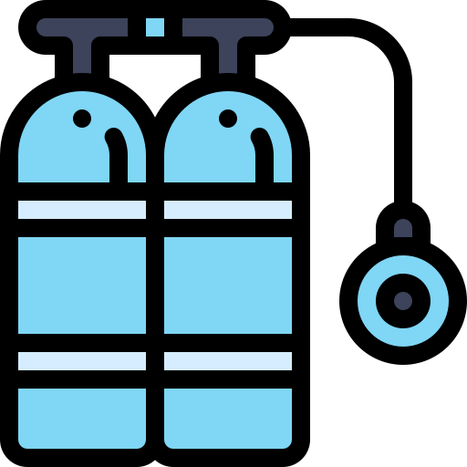
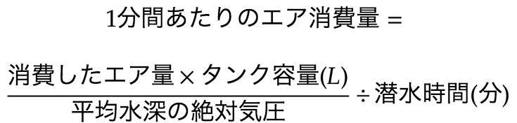

 Air Comsumption
エア消費量計算サイト(簡易版)
計算する
計算式
エントリー残圧：
200
気圧
エキジット残圧：
100
気圧
タンク容量：
10
リットル
平均水深：
10
メートル
潜水時間：
40
分
比較する
男性
女性
平均
13〜15 L/min
10〜12 L/min
やや多い
15〜20 L/min
12〜15 L/min
多い
20 L/min 以上
15 L/min 以上
計算式

・エントリー残圧：200気圧
・エキジット残圧：100気圧
・タンク容量：10リットル
・平均水深：10メートル(2気圧)
・潜水時間：40分
の場合は、((200-100)*10)/2/40で、12.5L/minとなります。